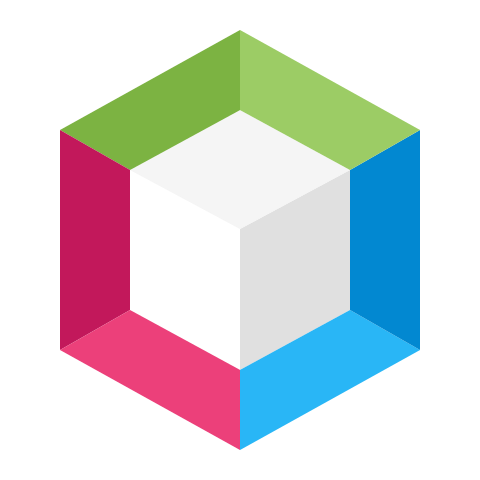
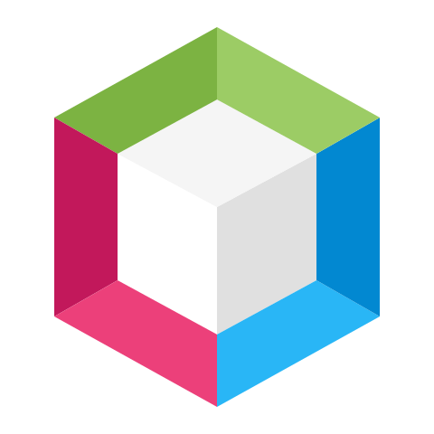

Me llamo Hugo Gómez García y soy una persona creativa, trabajadora y comprometida con lo que hace. Me gusta decir: "No es como comienzas las cosas, sino cómo las quieres continuar..."
Mi trayectoria comenzó en el mundo del diseño gráfico, luego telecomunicaciones e informática, y gracias a unos compañeros, descubrí la programación.
Actualmente estoy terminando el ciclo de Técnico Superior en Desarrollo de Aplicaciones Multiplataforma en la Universidad Alfonso X el Sabio, y me he especializado en Big Data e Inteligencia Artificial.
Me considero autodidacta, curioso y con una actitud positiva ante los retos. Me gusta trabajar en equipo, compartir ideas y seguir aprendiendo constantemente.


 
